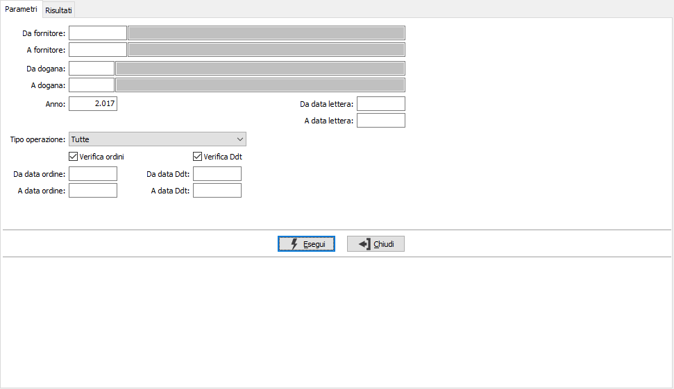
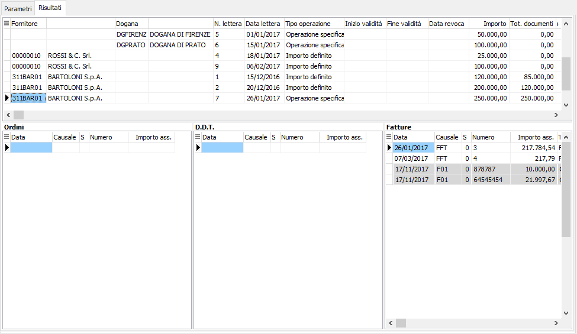

Controllo dichiarazioni/documenti acquisti
La funzione consente di visualizzare i documenti passivi per dichiarazione d’intento; all’interno del programma è anche possibile togliere l’assegnazione della dichiarazione d’intento dal documento.
Nei parametri è possibile specificare un range di fornitori o dogane, un intero anno oppure un periodo di date relative alle lettere; inoltre è possibile selezionare tutte le lettere oppure le singole tipologie (operazione specifica, importo definito, definizione periodo) tramite la casella "Tipo operazione'. Se gestita l'assegnazione multipla delle lettere di intento con la spunta “Verifica Ddt” (non attiva di default) sono visualizzati anche i Ddt da fatturare e con la spunta “Verifica ordini” (non attiva di default) sono visualizzati anche gli ordini da evadere in modo da consentire un controllo sugli importi assegnati alle dichiarazioni.

La pagina dei Risultati riporta in due griglie le singole lettere di intento (sopra) ed i relativi documenti associati (sotto); le lettere relative a "Importo definito" o “Operazione specifica” vengono evidenziate in rosso se il totale dei documenti associati è superiore all'importo definito. Nella colonna “Tot. documenti” viene visualizzato il valore dei documenti associati.
Se non è gestita l'assegnazione multipla delle lettere di intento saranno comunque presenti anche le griglie relative ad Ordini e ddt.

Nella colonna “Totale” dei documenti di trasporto viene riportato l’importo da evadere del documento, mentre per quanto riguarda le fatture nell’”Importo ass.” viene riportato l’importo delle fatture da contabilizzare o del movimento contabile se la fattura risulta contabilizzata. Nell’analisi non sono riportati i documenti a cui non è stata assegnata la dichiarazione intento.
Dalla sezione documenti di questa pagina è possibile assegnare o disassegnare documenti ad una lettera utilizzando il doppio clic del mouse oppure il menù contestuale; i documenti per cui non è possibile modificare l'assegnazione della lettera di intento (fatture contabilizzate, ecc) sono evidenziati come non selezionabili.
Tramite i pulsanti Anteprima e Stampa della toolbar o gli appositi tasti funzione è possibile stampare i dati visualizzati a video.